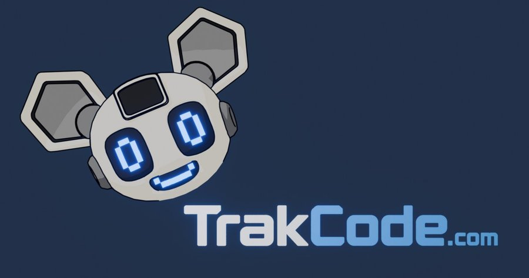

CS 499 capstone artifact
TrakCode
An AI-native, full-stack coding education platform: structured lessons, practice assignments graded by actually running the learner’s code in a sandboxed multi-language execution service, and an AI tutor named Trak. I designed and built it, and it is the artifact for all three of my capstone enhancements.